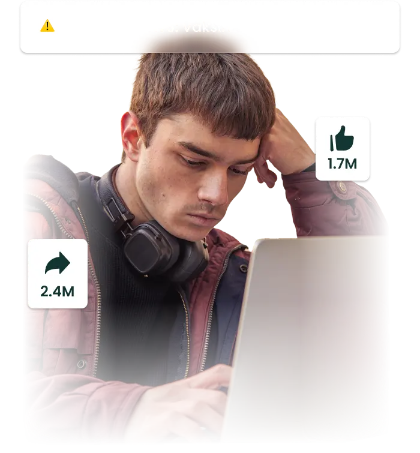

Belajar · Verifikasi · Lawan Hoaks
Jadilah
di Era Disinformasi.
Kuasai teknik detektif digital dalam hitungan menit. Pelajari, verifikasi, dan uji bersama EduVerify.
Jelajahi Materi
Hoaks Lebih Dekat
dari Dugaanmu.
Cepat
Berita palsu menyebar 6x lebih cepat dari fakta asli karena lebih sensasional dan memancing emosi.
Manipulasi
AI kini bisa membuat foto, video, dan artikel palsu yang hampir mustahil dibedakan dari yang asli.
Perpecahan
Satu hoaks bisa merusak kepercayaan, memicu konflik, dan menghancurkan hubungan antarmanusia.
Masif
62% pengguna media sosial Indonesia pernah menyebarkan hoaks tanpa menyadarinya.

EduVerify Hadir
dengan Solusinya.
Detektif Digital
Pelajari cara mengenali ciri-ciri hoaks sebelum terlanjur menyebarkannya.
Teknik Verifikasi
Kuasai metode verifikasi informasi yang digunakan para jurnalis profesional.
Psikologi Hoaks
Pahami mengapa otak manusia mudah termakan informasi palsu.
Kamu Berhak
Tahu Kebenarannya.
EduVerify lahir dari keresahan melihat hoaks yang semakin merajalela di Indonesia. Kami hadir dengan materi edukasi dan kuis interaktif untuk melatih kemampuan berpikirmu secara kritis.
- Edukasi yang fokus dan berbasis fakta
- Untuk seluruh generasi muda Indonesia
- Konten sederhana, dampak nyata